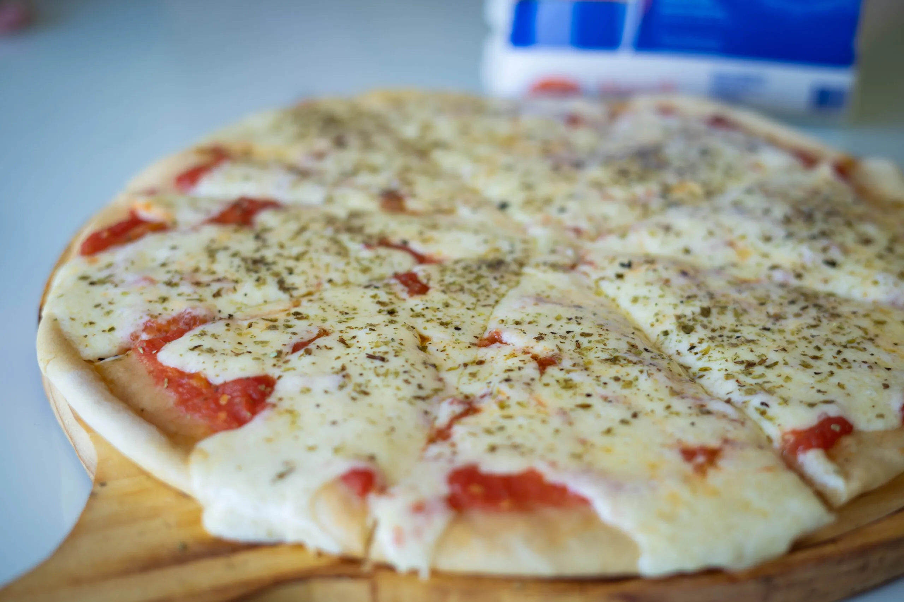

Receta de Pizza

Descripción
La pizza es uno de los platillos más populares en todo el mundo. Esta receta te enseñará cómo preparar una pizza deliciosa y casera.
Encontrarás los ingredientes necesarios, los pasos detallados y algunos consejos para lograr una pizza perfecta.
Ingredientes
- Masa: Harina, agua, levadura, sal y aceite de oliva.
- Salsa de tomate: Tomates, ajo, cebolla, aceite de oliva, sal y especias.
- Quesos: Mozzarella, parmesano, y algún otro queso de tu elección.
- Ingredientes adicionales: Pepperoni, champiñones, pimientos, aceitunas, etc.
Pasos
- Preparar la masa y dejarla reposar.
- Preparar la salsa de tomate.
- Estirar la masa y colocarla en una bandeja.
- Agregar la salsa de tomate y los ingredientes.
- Hornear la pizza hasta que esté dorada y crujiente.
- ¡Disfrutar de una deliciosa pizza casera!
Volver a la página principal